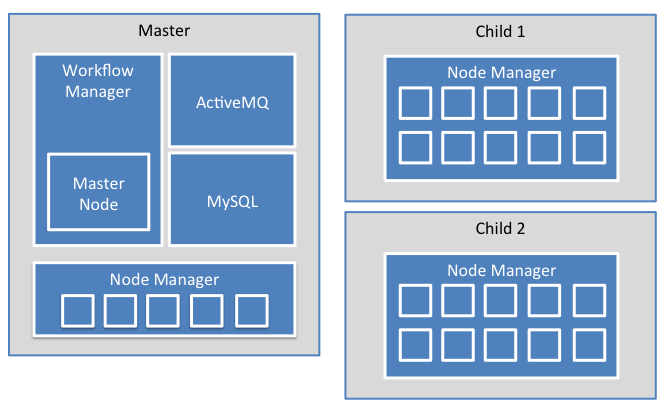

NOTICE: This software (or technical data) was produced for the U.S. Government under contract, and is subject to the Rights in Data-General Clause 52.227-14, Alt. IV (DEC 2007). Copyright 2017 The MITRE Corporation. All Rights Reserved.
Minimum Resource Requirements
Hardware
OpenMPF performs best when processing is distributed across a cluster of computers; a minimum of one dedicated server is required that provides the following:
- 4 Central Processing Units (CPUs)
- 4GB Random Access Memory (RAM), although in any operational use case environment at least 16GB of RAM is recommended
- 40GB hard disk space, with additional space to store media and processed objects
In a cluster configuration, participating servers are referred to as nodes, with one controlling node designated as the master node and the others designated as child nodes. In this case, a shared file system accessible to all participating nodes is also required.
The master contains the Workflow manager, ActiveMQ, MySQL, an instance of the OpenMPF process manager, named the Node Manager. A child contains only a node manager and processing components/algorithms.
Below is an example layout of an OpenMPF cluster consisting of 3 nodes:

Operating System and Software
OpenMPF runs on the CentOS 7 operating system, with Linux firewall (iptables) disabled and Linux SELINUX in permissive state (disabled is the preferred state to limit logging activity).
A browser is required in order to utilize the OpenMPF Web User Interface (UI). The officially supported browsers are FireFox and Chrome. Although other browsers might work, they have not been thoroughly tested and might not display or function properly.
OpenMPF Pre-Installation
Important: Please verify that all steps in the Pre-installation Checklist are completed prior to cluster configuration.
Pre-Installation Checklist
OpenMPF Installation
You only need to complete the following steps on the OpenMPF master node.
1. Install and Configure OpenMPF Management Software
Copy the OpenMPF release package .tar.gz, (e.g. mpf-open-source-0.9.0+master.tar.gz) to the OpenMPF master node.
From the OpenMPF master node, unpack the OpenMPF package.
tar zxvf <latest .tar.gz>
cd mpf-release
sudo sh install-mpf.sh
2. Configure the OpenMPF Cluster
Note: A master node will not run any services unless it is also designated and configured as a child. Think of a child as a worker in the OpenMPF cluster. Thus, in a single server environment it is mandatory to designate the host as both a master and child in order to do any meaningful processing (e.g. detection). By default, the master only runs the workflow manager web app, AMQ, Redis and MySQL.
Note: When prompted for username and password, use the same username and password you used to log in to the master node.
Note: When prompted for hostnames, only put in the hostnames (e.g., node-1), DO NOT put in the fully qualified domain name (e.g., node-1.example.org) or OpenMPF will behave in strange ways.
sudo sh /opt/mpf/manage/configure-cluster.sh
3. Push OpenMPF Configuration to OpenMPF Nodes
Note: Early in the script you will be prompted for the OpenMPF password. Use "mpf".
# As the "mpf" user (you may need to log out and log back in):
. /opt/mpf/manage/push-configuration.sh
4. Complete Node Configuration
OpenMPF is now running (no reboot required).
To complete node configuration:
- From the master node, browse to: http://localhost:8080/workflow-manager
- Login as the administrator (username: "admin" / password: "mpfadm")
- Go to the Nodes page and add detection services as desired
Updating Site Configuration
You can add or remove nodes and change other configuration options once OpenMPF has already been installed.
# As the "mpf" user:
mpf stop
sudo sh /opt/mpf/manage/configure-cluster.sh
/opt/mpf/manage/push-configuration.sh
Creating a Keystore
IMPORTANT: This is not recommended for a production environment.
These instructions will create a keystore with a self-signed certificate at /home/mpf/.keystore.
- Open a new terminal window.
sudo systemctl stop tomcat7cd /home/mpfkeytool -genkey -alias tomcat -keyalg RSA- At the prompt, enter a keystore password of:
mpf123 - Re-enter the keystore password of:
mpf123 - At the
What is your first and last name?prompt, press the Enter key for a blank value. - At the
What is the name of your organizational unit?, press the Enter key for a blank value. - At the
What is the name of your organization?prompt, press the Enter key for a blank value. - At the
What is the name of your City or Locality?prompt, press the Enter key for a blank value. - At the
What is the name of your State or Province?prompt, press the Enter key for a blank value. - At the
What is the two-letter country code for this unit?prompt, press the Enter key for a blank value. - At the
Is CN=Unknown, OU=Unknown, O=Unknown, L=Unknown, ST=Unknown, C=Unknown correct?prompt, press the Enter key to accept the values. - At the
Enter key password for <tomcat>prompt, press the Enter key for a blank value. - Verify the file
/home/mpf/.keystorewas created at the current time.